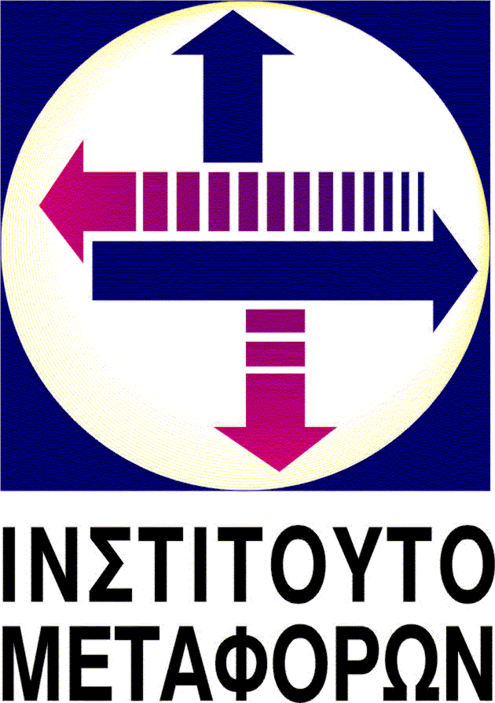
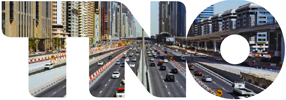
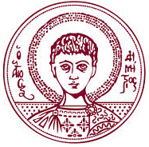
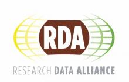

Curriculum Vitae
I am a Research Associate at the Technical University of Munich. Before that, I was a Research Associate at the Hellenic Institute of Transport of the Centre for Research and Technology Hellas and a PhD candidate at the National Technical University of Athens. I hold a Diploma in Rural and Surveying Engineering (2011) from the Aristotle University of Thessaloniki and an MSc in Transportation Infrastructure and Logistics (2014) from the Delft University of Technology (TU Delft). My research focuses on modelling and simulation of transportation systems, Intelligent Transport Systems (ITS), demand modeling and other Transport Related subjects.
Work Experience
| Oct 2016 - Today | Research Associate, Technical University of Munich | Address: Arciststraße 21, D-80333, München, Germany. |
 Sep 2014 - Sept 2016 | Research Associate, Center for Research and Technology Hellas –Hellenic Institute of Transport | Address: 6 th km Charilaou–Thermi Rd., 57001 Thermi, Thessaloniki, Greece. Projects: COMPASS4D, DECIDE, TMRI |  Apr 2013 - Feb 2014 | Graduating Intern, TNO
| Van Mourik Broekmanweg 6 2628 XE Delft, Netherlands Projects: SENSOR CITY – Financed by the Sensor City Foundation |  Oct 2012 - Nov 2012 | Student Assistant, TU Delft
| Stevinweg 1 2628 CN Delft, Netherlands | |
Education
| Jun 2015 - Today | Ph.D. Candidate, National Technical University of Athens Greece
Subject: Social Media and Transportation, Advisors: Antoniou C., Pel A.J., Pereira F.C. |  |
| Sep 2011 - Feb 2014 | Master of Science in Transport Infrastructure & Logistics, TU Delft
Specialization: Design: Transportation Systems and Networks, Thesis: "Parking Behavioural & Assignment Modelling" Grade:8.5 | |
| Sep 2005 - Mar 2011 | Diploma in Rural & Surveying Engineering, AuTh Specialization: Transportation & Hydraulics engineering, Thesis: "Trip characteristics investigation of Auth users -Development of a mobility plan" Grade:7.4 |  |
Awards and Scholarships
| Mar 2016 | Scholarship
for the Discrete Choice Analysis workshop, École polytechnique fédérale de Lausanne |  |
Mar 2016 | Grant
for the Research Data Alliance 7th plenary meeting, Research Data Alliance |  |
Jun 2015 | Grant
for Short Term Scientific Mission, University of Gävle, Gävle Sweden, EU COST TU1305, Social Networks and Transportation | |
Mar 2015 | Grant
for Short Term Scientific Mission, Instituto Superior Técnico, Lisbon Portugal EU COST TU1209, Transportation Equity Analysis | |
Scientific Papers Reviews
| Journals |
| Transportation Research Part A | Elsevier
| Transportation Research Part C | Elsevier
| Experts Systems with Applications | Elsevier | Conferances |
| TRISTAN 2016 |
|
|
Computer Skills
| Engineering Tools | Basic Knowledge
PTV Vissim, MatSim, PASW Statistics 18 (SPSS), NGene, Biogeme Advanced Knowledge OmniTRANS, AutoCad, PETER, OpenTrack, PTV Visum, ITSModeller Programming & O.S. | Basic Knowledge
Python, Joomla, WordPress, HTML, Linux, Ubuntu, Limesurvey | Advanced Knowledge R, MatLab, Java, VBA, SQL Other | Basic Knowledge
Adobe Photoshop, InDesign, Adobe Illustrator |
Advanced Knowledge LaTeX |
Languages
| English | Excellent
| Greek | Native Speaker
| Dutch | Basic Knowledge |
|